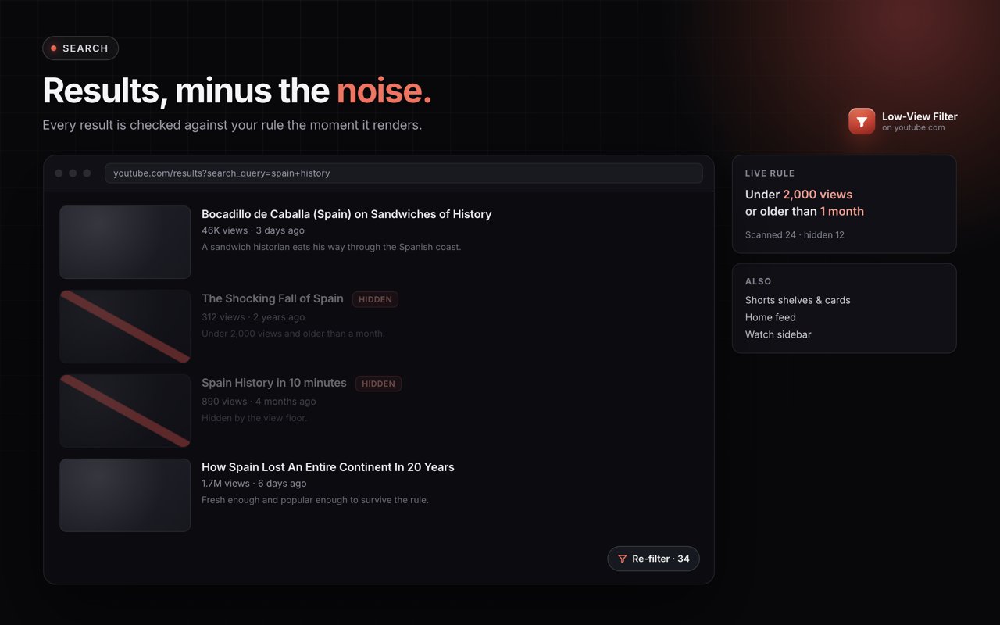

Keep the fresh videos.
Hide the stale ones.
Set a view floor and an upload cut-off once. Low-View Filter removes old and low-view results from YouTube search, the home feed and Shorts — so niche research shows what is working now, and your feed stops being a museum.
Add to Chrome
Free · no account · data stays in Chrome

One rule, two numbers
A view floor and an upload cut-off. Combine them with OR when you want a strict clean-up, or AND when you only want videos that fail both.
Built for research
See a niche as it exists this month: fresh uploads with real traction, no 2018 back catalogue in the way.
Works where you browse
Search, home feed, watch sidebar and channel pages. Shorts shelves go as a unit, with no empty gaps.